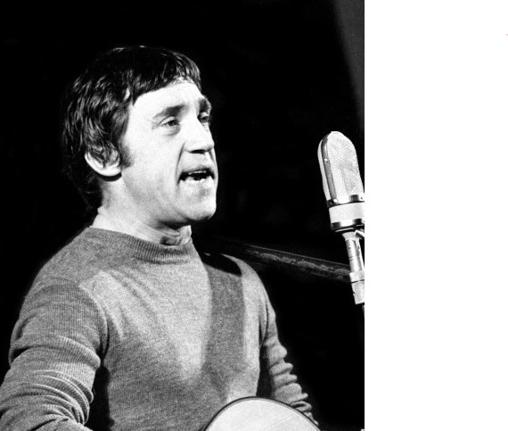

Владимир Семёнович Высоцкий
Владимир Семёнович Высоцкий - советский поэт, актёр театра и кино, автор-исполнитель песен (бард), прозаик, сценарист; заслуженный артист РСФСР (1986, посмертно), лауреат Государственной премии СССР («за создание образа Жеглова в телевизионном художественном фильме „Место встречи изменить нельзя“ и авторское исполнение песен», 1987, посмертно).Как поэт Высоцкий реализовал себя, прежде всего, в жанре авторской песни. Первые из написанных им произведений относятся к началу 1960-х годов. Вначале они исполнялись в кругу друзей, позже получили широкую известность благодаря распространявшимся по стране магнитофонным записям. Поэзия Высоцкого отличалась многообразием тем (уличные, лагерные, военные, сатирические, бытовые, сказочные, «спортивные» песни), остротой смыслового подтекста и акцентированной социально-нравственной позицией автора. В его произведениях, рассказывающих о внутреннем выборе людей, поставленных в экстремальные обстоятельства, прослеживались экзистенциальные мотивы. Творческая эволюция Высоцкого прошла в несколько этапов. В его раннем творчестве преобладали уличные и дворовые песни. С середины 1960-х годов тематика произведений начала расширяться, а песенные циклы — складываться в новую «энциклопедию русской жизни». В 1970-х годах значительную часть творчества Высоцкого составляли песни и стихотворения исповедально-философского характера, поэт часто обращался к вечным вопросам бытия.
Студенческие годы.
После окончания школы Владимир хотел связать свою дальнейшую судьбу с актёрской профессией, но его планы не получили поддержки в семье — Семён Владимирович и другие родственники настаивали на поступлении в технический вуз. Вместе с Кохановским Высоцкий подал документы в МИСИ — инженерно-строительный институт, конкурс на поступление в который в 1955 году составлял 17—18 человек на место. 23 августа 1955 года фамилия Владимира появилась в приказе ректора МИСИ № 403: «Зачислить в число студентов 1-го курса механического факультета т. Высоцкого B. C. без предоставления общежития». К учёбе на инженерной специальности он относился весьма прохладно и в конце первого семестра, 23 декабря, поняв, что не сможет учиться в техническом вузе, написал заявление об отчислении по собственному желанию. 25 января 1956 года, в день своего рождения, Высоцкий вместе с Кохановским сочинили длинную песню, которая заканчивалась четверостишием: «А коль во МХАТ не попадёт, / раздавим поллитровочку, / Васёк в солдатики пойдёт / носить ружьё-винтовочку». Кстати, в армии Высоцкий так никогда и не служил, в том числе и после окончания Школы-студии МХАТ. Существует несколько версий, как удалось избежать призыва в период 1960—1964, но точной информации по состоянию на 2022 год нет.